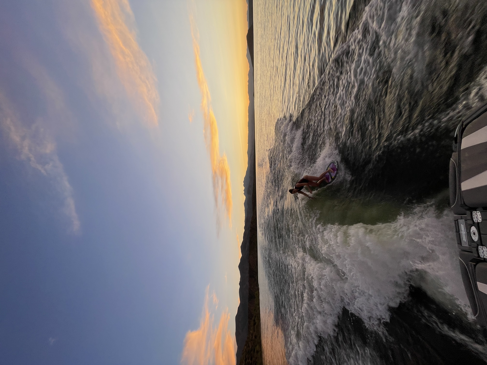

Interactive Watersports Tableau Graph
This is a live Tableau visualization that displays the most commonly practiced watersports, showing that wakesurfing is still a relatively niche sport but has been growing in popularity over the last decade.

Wakesurfing is one of my favorite things to do because it combines competition, balance, style, and being out on the water. It is fun to learn, fun to improve at, and fun to do with friends.
Jump to the videoI tried wakesurfing for the first time over a decade ago and was instantly hooked. The perfect combination of surfing and wakeboarding, wakesurfing is a blast to learn. It is perfect for low risk fun on the water, but also has a high skill ceiling for those who want to get more competitive and try tricks. Wakesurfing is more than just riding behind a boat. It takes timing, balance, and control. Once you get comfortable, it becomes one of the most fun sports to keep improving at.

This is a live Tableau visualization that displays the most commonly practiced watersports, showing that wakesurfing is still a relatively niche sport but has been growing in popularity over the last decade.